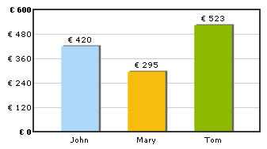

| Using Euro Character on chart |
|
| When using dataURL method |
| If you're using dataURL method, you need to encode Euro character to %80 in your XML and then use it as under: |
| <graph decimalPrecision='0' numberPrefix='%80 '> <set name='John' value='420' color='AFD8F8' /> <set name='Mary' value='295' color='F6BD0F' /> <set name='Tom' value='523' color='8BBA00' /> </graph> |
| You'll now get the following output: |
|  |
| When using dataXML method |
| When using dataXML method, you need to encode Euro character to %80 - else, you'll get an error on many browsers. Following is the full HTML Code to embed the chart: |
<div id="chart1div"> |
| You'll again get the same output as before. |